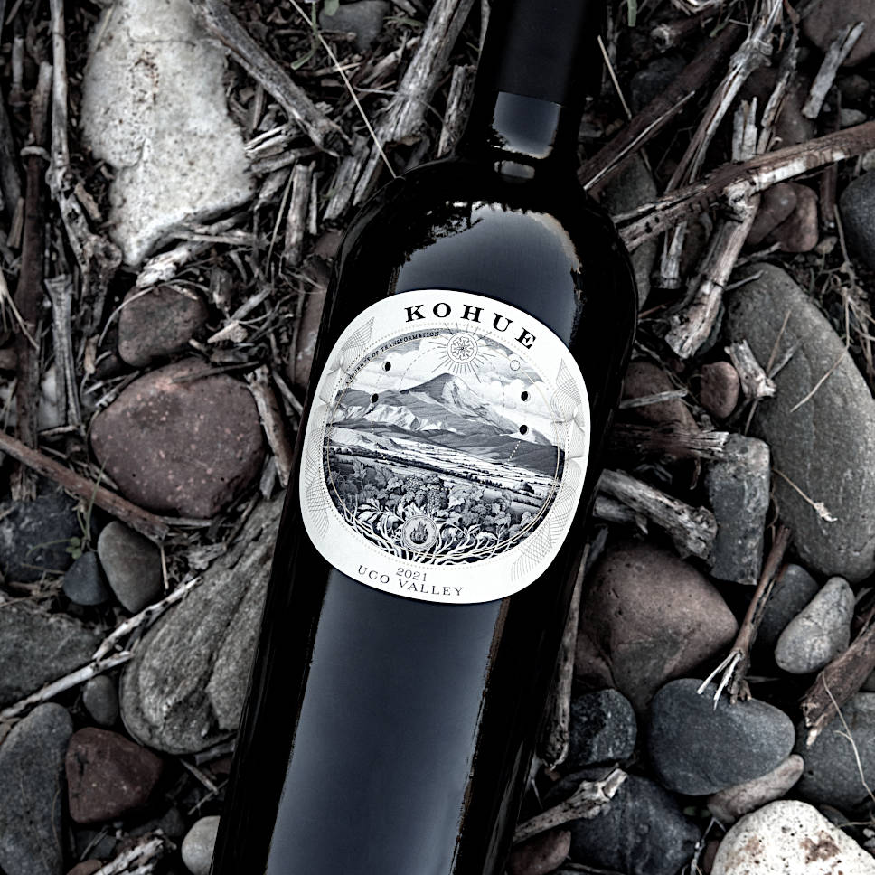

"These are the first wines I have tasted from Maxi Valsecchi's Kohue, which offers an intriguing mix of wines
from Argentina and Napa Valley. Valsecchi worked with Nigel Kinsman at Araujo Estate in 2009 and 2010
and coninues to make the trip to Napa Valley for harvest with Kinsman each year. I am far from an expert
on the wines of Argentina, but I can say that the Kohue Cabernet Sauvignon in this range is terrific."
By Antonio Galloni on November 2025
From April in Mendoza to October in Napa Valley, each year we craft wines
across two hemispheres.
Our portfolio brings together wines from these two renowned regions,
reflecting our experience and winemaking journey: Hand-crafted, single-
vineyard Malbecs and Cabernet Sauvignons from the finest terroirs nestled in
the majestic foothills of the Andes, and Cabernet Sauvignons from
distinguished vineyards in the iconic heart of Napa Valley.
Mendoza
|
Napa Valley
@if(showMendozaWine) {
Mendoza
|
Napa Valley
}
@if(showNapaWine) {
Mendoza
|
Napa Valley
}
We have explored every corner of the Mendoza wine country, meticulously
selecting vineyard sites down to the precise rows, where old, wise vines, some
of them over 100 years old, impart complexity and character.
Carefully tended by pioneering vintners, watched over by the soaring Andes
Mountains, nurtured by radiant sunlight, shaped by the wind and altitude,
and rooted in ancient alluvial soils. These vines tell a story – one we are
passionate about sharing as we reveal the extraordinary potential of the
terroir of our native land.

Malbec
Paraje Altamira, Uco Valley
Vintage: 2021
Cabernet Sauvignon
Paraje Altamira, Uco Valley
Vintage: 2021
@if(!this.authService.user()) {
Join The List
}
@if(this.authService.user()) {
Acquire
}
@if(showMendozaWine) {
We have explored every corner of the Mendoza wine country, meticulously
selecting vineyard sites down to the precise rows, where old, wise vines, some
of them over 100 years old, impart complexity and character.
Carefully tended by pioneering vintners, watched over by the soaring Andes
Mountains, nurtured by radiant sunlight, shaped by the wind and altitude,
and rooted in ancient alluvial soils. These vines tell a story – one we are
passionate about sharing as we reveal the extraordinary potential of the
terroir of our native land.
Malbec
Paraje Altamira, Uco Valley
Vintage: 2021,
2022
Cabernet Sauvignon
Paraje Altamira, Uco Valley
Vintage: 2021
@if(!this.authService.user()) {
Join The List
}
@if(this.authService.user()) {
Acquire
}
}
@if(showNapaWine) {
After years of scouting vineyards across nearly the entire valley,
understanding its soils, crafting wines from its diverse terroirs, and building
collaborations and friendships grounded in this region, the opportunity to
make our own wine from truly exceptional vineyards came about in 2023.
Crafting the wine at Wheeler Farms, a state-of-the-art winery woven into our
story, felt like a natural evolution and brought the project full circle. Our
journey between two hemispheres is now fully reflected in our Napa Valley
wines.